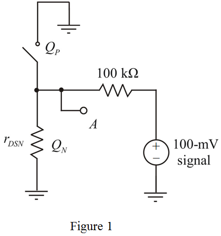
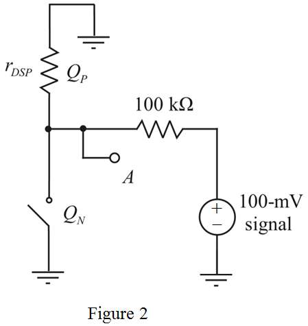

Determine the value of drain to source resistance of the NMOS transistor.
Substitute  for
for  , for
, for  and
and  for
for  in the equation.
in the equation.
Refer to Figure P13.29 in the text book.
Check the condition for region of operations for the NMOS transistor with the input voltage.
and
Hence, the NMOS transistor goes into active region.
Check the condition for region of operations for the PMOS transistor with the input voltage.
Hence, the PMOS transistor goes into cutoff region.
The modified circuit diagram is shown in Figure 1.

Determine the value of drain to source resistance of the NMOS transistor.
Substitute for , for and for in the equation.
Determine the value of signal voltage across the node A.
Substitute  for in the equation.
for in the equation.
Thus, the value of signal voltage across the node A,  is
is
Check the condition for region of operations for the NMOS transistor with the input voltage.
Hence, the NMOS transistor goes into cutoff region.

and
Hence, the PMOS transistor goes into active-region.
The modified circuit diagram is shown in Figure 2.

Determine the value of drain to source resistance of the PMOS transistor.

Substitute  for
for  , for
, for  and
and  for
for  in the equation.
in the equation.
Determine the value of signal voltage across the node A.
Substitute  for in the equation.
for in the equation.
Thus, the value of signal voltage across the node A,  is.
is.